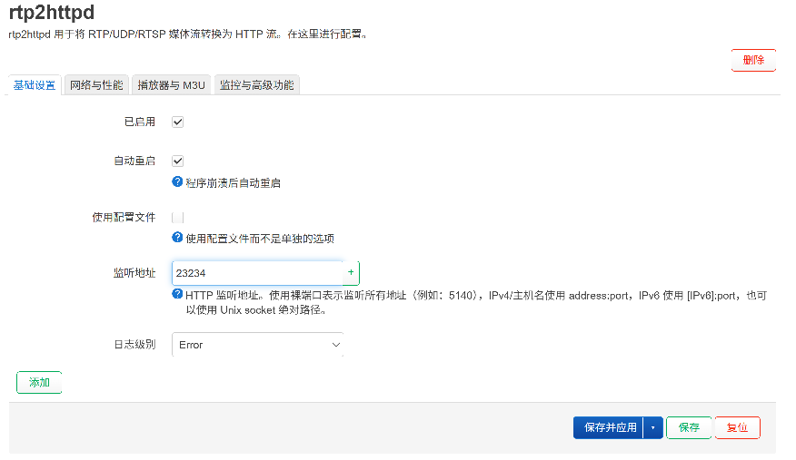
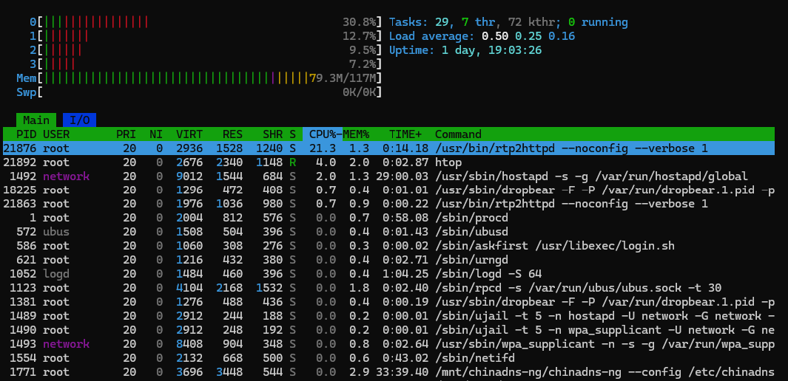
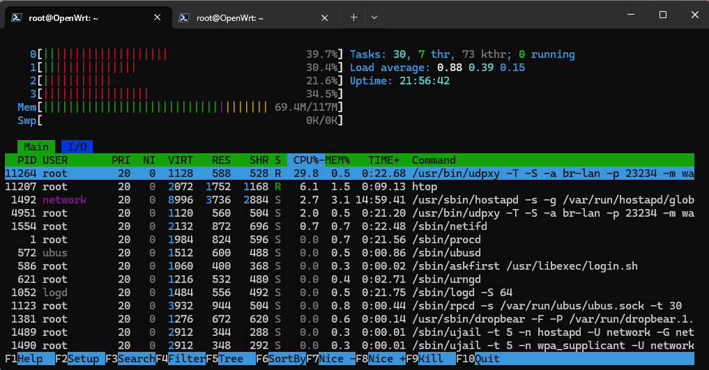

前些天发表《在安卓机顶盒中看宽带运营商 IPTV》 时提到运营商组播代理工具用的是 udpxy，但是部分网友说使用 rtp2httpd 性能更好。所以我又实地测试了一下 rtp2httpd 这款组播转单播软件。
rtp2httpd 官方文档中说其已经上架了若干家 openwrt 的变种操作系统的应用商店，其中就包括我用的 ImmortalWrt，但是实测发现在我的设备上找不到安装包，估计是由于我用的版本过低（23 版本）。所以还是用官方提供的安装脚本来一键安装：
uclient-fetch -q -O - https://raw.githubusercontent.com/stackia/rtp2httpd/main/scripts/install-openwrt.sh | sh安装完成后，它是自带 openwrt 管理 UI的，在 openwrt 的 服务 菜单中能找到 rtp2httpd 的子菜单，点开 基础设置 的标签页，将 已启用 的复选框选中，顺便勾选上 自动重启（程序崩溃后自动重启）。监听地址 默认是 5140，这里改成我们项目中生成的 m3u 文件所用的 23234，这样项目中的 m3u 文件可以直接用。

配置完成后点击按钮 保存并应用，等待其生效。生效后，就可以做测试了，我找了一个 4K 视频，跟 udpxy 做对比，CPU 占用果然要低。
rtp2httpd 运行时：

udpxy 运行时：

从这两张截图可以读到：